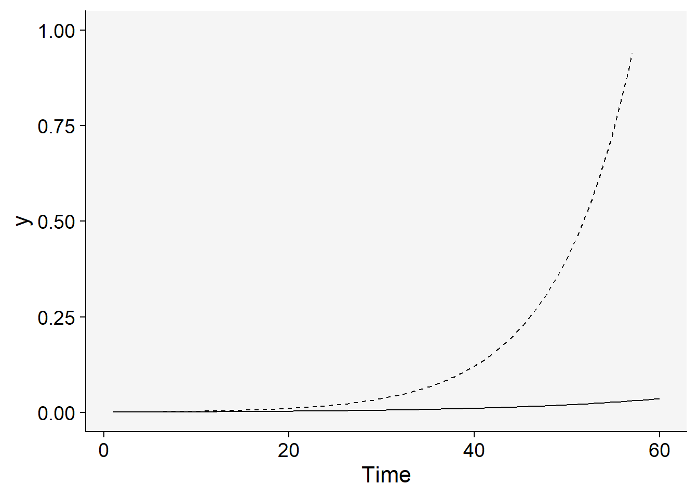
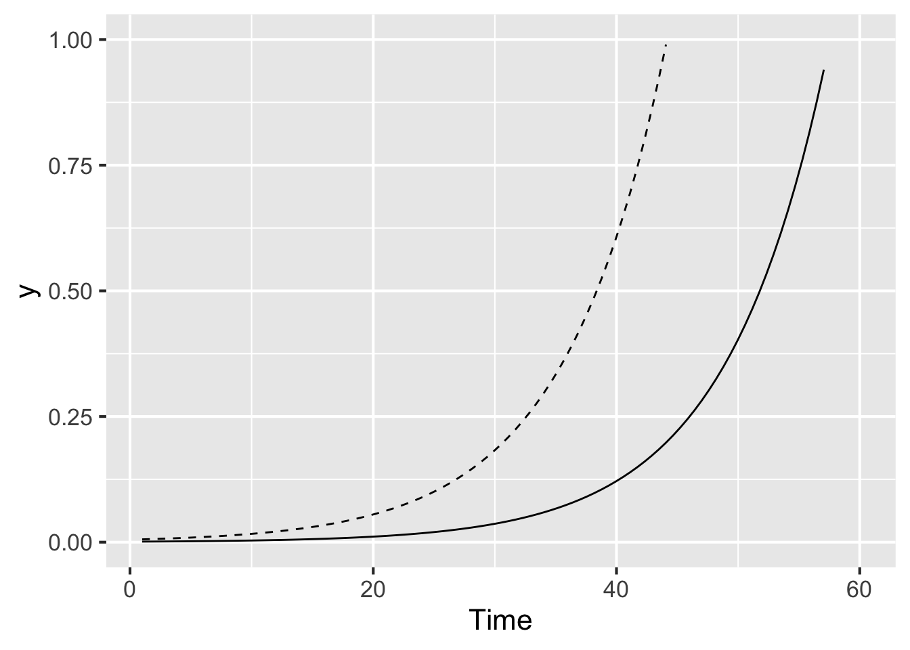
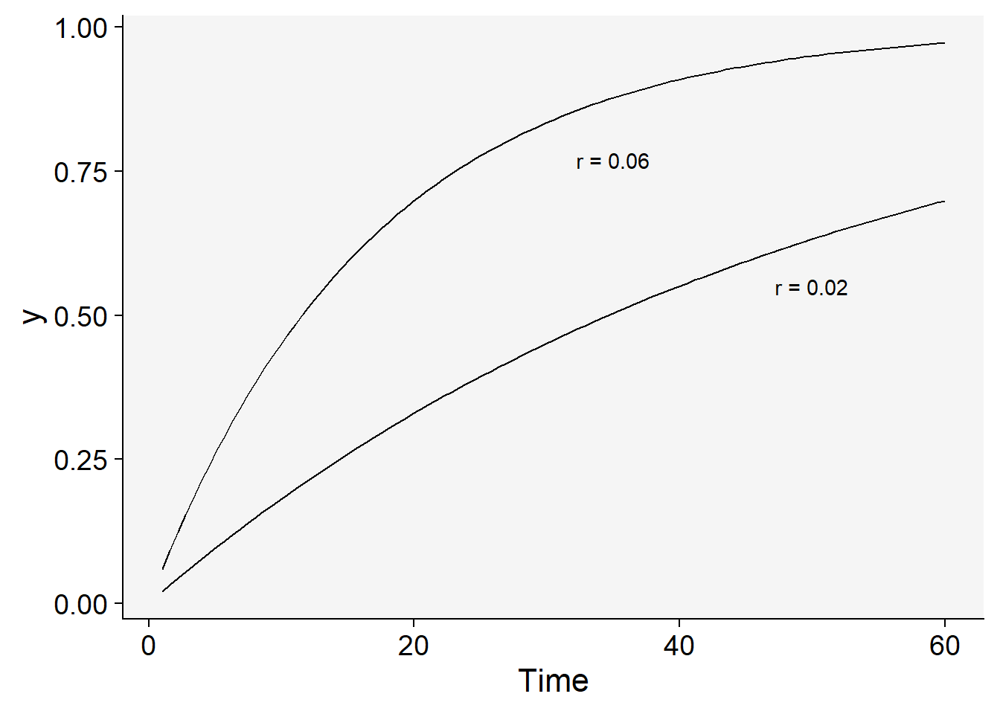
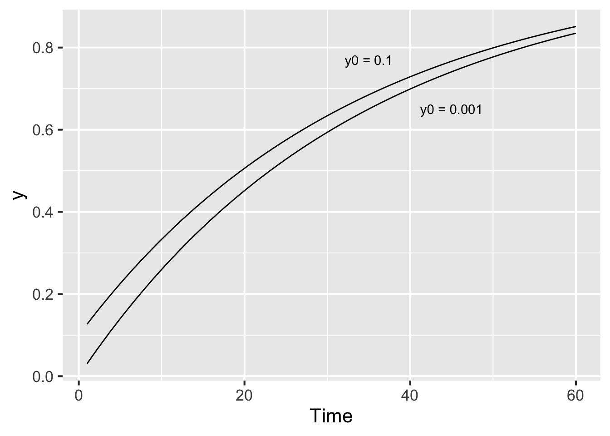
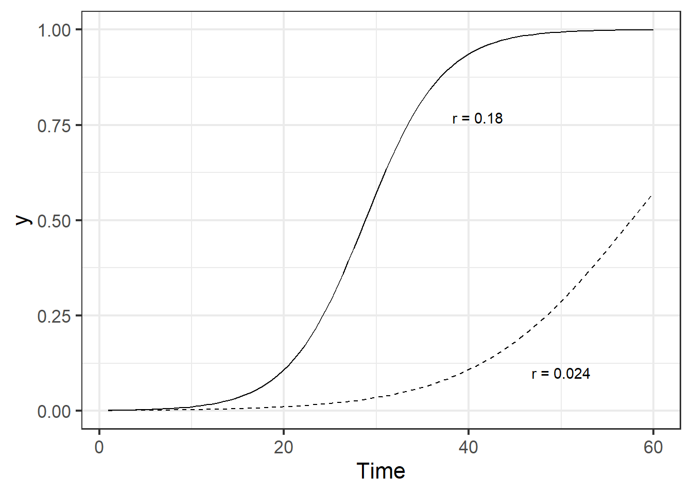
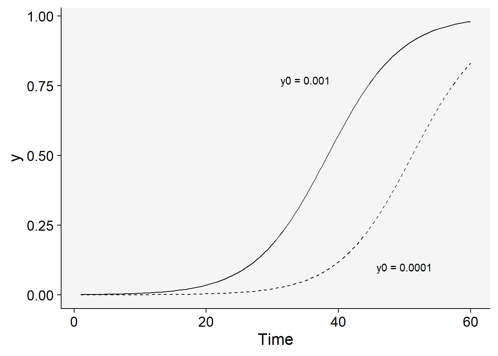

library(tidyverse) # essential packages
theme_set(theme_bw(base_size = 16)) # set global theme7 Population models
This is a work in progress that is currently undergoing heavy technical editing and copy-editing
Mathematical models can be fitted to the DPC data to express epidemic progress in terms of rates and absolute/relative quantities. The latter can be accomplished using population dynamics (or growth-curve) models for which the estimated parameters are usually meaningful biologically and appropriately describe epidemics that do not decrease in disease intensity. By fitting an appropriate model to the progress curve data, another set of parameters is available to the researcher when attempting to represent, understand or compare epidemics.
The family of models that describe the growth of epidemics, hence population dynamics model, are known as deterministic models of continuous time (Madden et al. 2017). These models are usually fitted to DPC data to obtain two or more biologically meaningful parameters. Here, these models and their formulations are shown using R scripts to simulate the theoretical curves for each model.
7.0.1 Non-flexible models
These population dynamics models require at least two parameters, hence they are known as non-flexible, as opposed to the flexible ones for which there are at least one additional (third) parameter.
Following the convention proposed by (Madden et al. 2017) in their book “The study of plant disease epidemics”:
time is represented by \(t\)
disease intensity by \(y\)
the rate of change in \(y\) between two time units is represented by \(\frac{dy}{dt}\)
Now we can proceed and learn which non-flexible models exist and for which situation they are more appropriate.
7.0.1.1 Exponential
The differential equation for the exponential model is given by
\(\frac{dy}{dt} = r_E.y\),
where \(r_E\) is the apparent infection rate (subscript E for this model) (sensu Vanderplank) and \(y\) is the disease intensity. Biologically, this formulation suggests that diseased plants, or \(y\), and \(r_E\) at each time contribute to disease increase. The value of \(\frac{dy}{dt}\) is minimal when \(y = 0\) and increases exponentially with the increase in \(y\).
The integral for the exponential model is given by
\(y = y_0 e^{r_Et}\),
where \(y0\) is and \(r\) are obtained via estimation. Let’s simulate two curves by varying \(r\) while fixing \(y0\) and varying the latter while fixing \(r_E\). We produce the two plots in ggplot and add the predicted curve using the `stat_function`. But first, we need to define values for the two model parameters. Further modifications to these values will be handled directly in the simulation (e.g. doubling infection rate, reducing initial inoculum by half, etc.).
y0 <- 0.001
r <- 0.06
tmax <- 60 # maximum duration t of the epidemics
dat <- data.frame(t = seq(1:tmax), y = seq(0:1)) # define the axesIn the plot below, note that the infection rate in one curve was doubled (\(r\) = 0.12)
dat |>
ggplot(aes(t, y)) +
stat_function(fun = function(t) y0 * exp(r * t), linetype = 1) +
stat_function(fun = function(t) y0 * exp(r * 2 * t), linetype = 2) +
ylim(0, 1) +
labs(x = "Time")
Now the inoculum was increased five times while using the same doubled rate.
dat |>
ggplot(aes(t, y)) +
stat_function(fun = function(t) y0 * exp(r * 2 * t), linetype = 1) +
stat_function(fun = function(t) y0 * 5 * exp(r * 2 * t), linetype = 2) +
ylim(0, 1) +
labs(x = "Time")
7.0.1.2 Monomolecular
The differential of the monomolecular model is given by
\(\frac{dy}{dt} = r_M (1-y)\)
where now the \(r_M\) is the rate parameter of the monomolecular model and \((1-y)\) is the proportion of non-infected (healthy) individuals or host tissue. Note that \(\frac{dy}{dt}\) is maximum when \(y = 0\) and decreases when \(y\) approaches 1. Its decline is due to decrease in the proportion of individuals or healthy sites with the increase in \(y\). Any inoculum capable of infecting the host will more likely land on infected individuals or sites.
The integral of the monomolecular model is given by
\(\frac{dy}{dt} = 1 - (1-y)e^{-r_Mt}\)
This model commonly describes the temporal patterns of the monocyclic epidemics. In those, the inoculum produced during the course of the epidemics do not contribute new infections. Therefore, different from the exponential model, disease intensity \(y\) does not affect the epidemics and so the absolute rate is proportional to \((1-y)\).
Let’s simulate two monomolecular curve with different rate parameters where one is one third of the other.
dat |>
ggplot(aes(t, y)) +
stat_function(fun = function(t) 1 - ((1 - y0) * exp(-r * t))) +
stat_function(fun = function(t) 1 - ((1 - y0) * exp(-(r / 3) * t))) +
labs(x = "Time") +
annotate(geom = "text", x = 35, y = 0.77, label = "r = 0.06") +
annotate(geom = "text", x = 50, y = 0.55, label = "r = 0.02")
Now inoculum was increased 100 times with the reduced rate.
dat |>
ggplot(aes(t, y)) +
stat_function(fun = function(t) 1 - ((1 - y0) * exp(-r / 2 * t))) +
stat_function(fun = function(t) 1 - ((1 - (y0 * 100)) * exp(-r / 2 * t))) +
labs(x = "Time") +
annotate(geom = "text", x = 35, y = 0.77, label = "y0 = 0.01") +
annotate(geom = "text", x = 45, y = 0.65, label = "y0 = 0.001")
7.0.1.3 Logistic
The logistic model is a more elaborated version of the two previous models as it incorporates the features of them both. Its differential is given by
\(\frac{dy}{dt} = r_L. y . (1 - y)\),
where \(r_L\) is the infection rate of the logistic model, \(y\) is the proportion of diseased individuals or host tissue and \((1-y)\) is the proportion of non-affected individuals or host area.
Biologically, \(y\) in its differential equation implies that \(\frac{dy}{dt}\) increases with the increase in \(y\) (as in the exponential) because more disease means more inoculum. However, \((1-y)\) leads to a decrease in \(\frac{dy}{dt}\) when \(y\) approaches the maximum \(y=1\), because the proportion of healthy individuals or host area decreases (as in the monomolecular). Therefore, \(\frac{dy}{dt}\) is minimal at the onset of the epidemics, reaches a maximum when \(y/2\) and declines until \(y=1\).
The integral is given by
\(y = \frac{1}{1 + (1-y_0).e^{-r.t}}\),
where \(r_L\) is the apparent infection rate of the logistic model and \(y0\) is the disease intensity at \(t=0\). This model provides a good fit to polycyclic epidemics.
Let’s check two curves where in one the infection rate is double while keeping the same initial inoculum.
dat |>
ggplot(aes(t, y)) +
stat_function(
linetype = 2,
fun = function(t) 1 / (1 + ((1 - y0) / y0) * exp(-r * 2 * t))
) +
stat_function(fun = function(t) 1 / (1 + ((1 - y0) / y0) * exp(-r * 4 * t))) +
labs(x = "Time") +
annotate(geom = "text", x = 41, y = 0.77, label = "r = 0.18") +
annotate(geom = "text", x = 50, y = 0.10, label = "r = 0.024")
Now the inoculum is reduced 10 times for a same infection rate.
dat |>
ggplot(aes(t, y)) +
stat_function(
linetype = 2,
fun = function(t) 1 / (1 + ((1 - (y0 / 10)) / (y0 / 10)) * exp(-r * 3 * t))
) +
stat_function(fun = function(t) 1 / (1 + ((1 - y0) / y0) * exp(-r * 3 * t))) +
labs(x = "Time") +
annotate(geom = "text", x = 35, y = 0.77, label = "y0 = 0.001") +
annotate(geom = "text", x = 50, y = 0.10, label = "y0 = 0.0001")
7.0.1.4 Gompertz
The Gompertz model is similar to the logistic and also provides a very good fit to several polycyclic diseases. The differential equation is given by
\(\frac{dy}{dt} = r_G.[ln(1) - ln(y)]\)
Differently from the logistic, the variable representing the non-infected individuals or host area is \(-ln(y)\). The integral equation is given by
\(y = e^{(ln(y0)).{e^{-r_G.t)}}}\),
where \(r_G\) is the apparent infection rate for the Gompertz models and \(y_0\) is the disease intensity at \(t = 0\).
Let’s check curves for two rates.
dat |>
ggplot(aes(t, y)) +
stat_function(
linetype = 2,
fun = function(t) exp(log(y0) * exp(-r/2 * t))
) +
stat_function(fun = function(t) exp(log(y0) * exp(-r*2 * t))) +
labs(x = "Time") +
annotate(geom = "text", x = 41, y = 0.77, label = "r = 0.12") +
annotate(geom = "text", x = 50, y = 0.10, label = "r = 0.03")
And those when inoculum was reduced one thousand times.
dat |>
ggplot(aes(t, y)) +
stat_function(
linetype = 2,
fun = function(t) exp(log(y0) * exp(-r*2 * t))
) +
stat_function(fun = function(t) exp(log(y0/1000) * exp(-r*2 * t))) +
labs(x = "Time") +
annotate(geom = "text", x = 15, y = 0.77, label = "y0 = 0.001") +
annotate(geom = "text", x = 25, y = 0.10, label = "y0 = 0.00001")